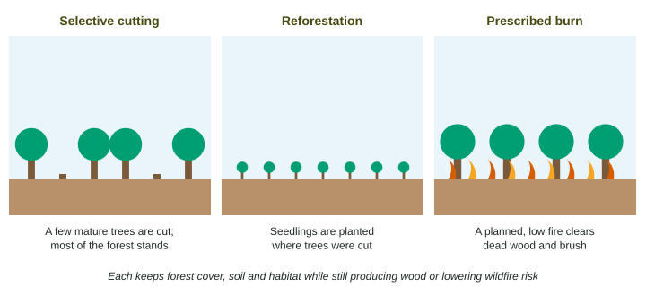

Forests give wood, paper and fuel, and they also hold soil, store carbon, clean water and shelter wildlife. Sustainable forestry tries to get the first set of benefits without losing the second. This page covers its main methods: selective cutting, reforestation, prescribed burns, and reusing wood.
The goal
Sustainable forestry harvests wood no faster than the forest regrows, the same idea as the maximum sustainable yield of a fishery, while protecting the soil, streams, habitat and biodiversity that make the forest work. In practice, foresters measure how much wood a forest adds each year and keep the harvest at or below it.
A 5,000-hectare forest grows 4 m³ of wood per hectare each year. The most that can be cut each year without shrinking the forest:
Methods

| Method | How it works | Trade-off |
|---|---|---|
| Selective cutting | only some trees, often mature ones, are cut; the forest keeps its cover, roots, shade and habitat | costs more per log; needs skilled crews and careful roads |
| Reforestation | trees are planted or allowed to regrow on cut land, restoring habitat and carbon storage over decades | a one-species plantation restores little biodiversity; mixed native species do more |
| Prescribed burns | planned low fires burn dead wood and brush, so later wildfires have less fuel and stay cooler | smoke; risk if weather changes; needs trained crews |
| Streamside strips | uncut trees along streams keep shade and hold soil | less timber harvested |
| Reuse and recycling | recycled paper and reclaimed lumber replace new wood, lowering demand | collecting and processing costs |
Why foresters set fires
Many forests, such as the ponderosa pine forests of the western United States, evolved with frequent low fires that burned brush every few years and left the big trees alive. For most of the twentieth century, nearly every fire was put out. Dead wood and young trees piled up, so when fires did escape, they burned hot enough to climb into the treetops (crown fires) and kill whole forests. Prescribed burns, set under safe weather by trained crews, put the low fires back. Some trees and plants even depend on fire: certain pine cones open and release seeds only after heat.
Plots with prescribed burns had 8 metric tons of fuel per hectare; unburned plots had 40. Percent change: . Flames reached 1.2 m in the burned plots and 12 m in the others: times higher.
Forests and carbon
Forests store huge amounts of carbon in wood, roots and soil. Keeping forest cover through selective cutting, replanting cut land, and preventing the hottest wildfires all keep more of that carbon out of the air. Wood made into long-lasting lumber also holds its carbon for decades.
Writing about forestry solutions
Give the method, where it applies and how it works: "Cut selected mature trees and leave a 30-meter strip of uncut forest along the stream, which keeps roots holding the soil and shade over the water, so the stream stays clear and cool." A policy version is a rule: "a state law requiring strips of uncut forest along streams in logged areas."